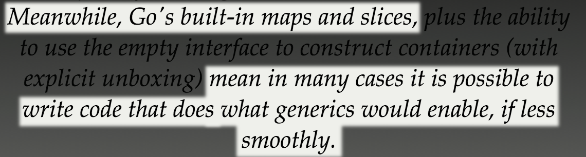

Abstraction in Go or:
How I Learned to Stop Worrying and Love Go's Lack of Generics

Generics In Action
LinkedList<Integer> queue = new LinkedList<Integer>();
BinaryTree<String> queue = new BinaryTree<String>();
public static map(LinkedList<Integer> x) { ... }
public static reduce(ArrayList<Float> y) { ... }
public static DepthFirstSearch(BinaryTree<String> root) { ... }
"It would be much more useful, and considerably more flexible, to write [code] that could [operate on] two values of any type. Generic code enables you to write such a function."
Go Caveats
- Go code will be more verbose
- Genericism will require bending of the type system
- Do you really need it?
Code Generation
Don't do it
... Unless you have to
- Use libraries
- Use
import "text/template"
// +gen slice:"Where,Count,GroupBy[string]"
type MyType struct {}
Maps & Slices & Channels, Oh My!
The Blessed Types
Boxed Types

Reflection
import "reflect"
func Swap(array []interface{}, i, j int) {
var temp reflect.Value
arrayValue := reflect.ValueOf(array)
temp.Set(arrayValue.Index(i))
arrayValue.Index(i).Set(arrayValue.Index(j))
arrayValue.Index(j).Set(temp)
}Interfaces!!!
"If interfaces aren't sufficient enough for your abstraction needs then you need to rethink your data model."
Philip's Law